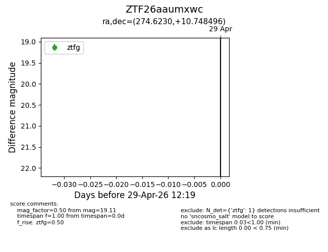
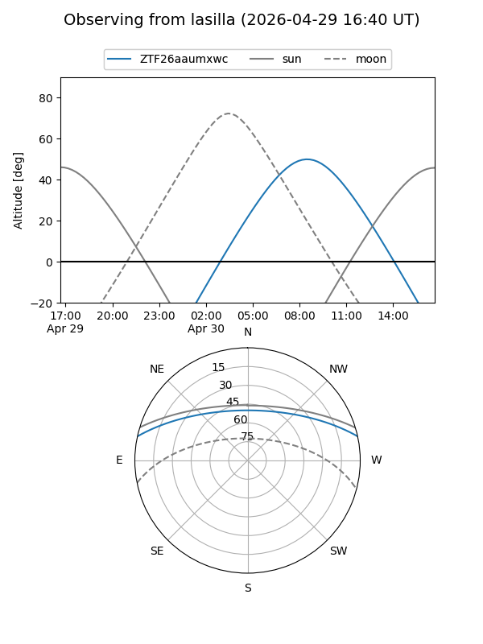
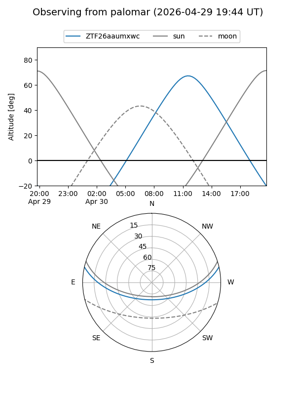

ZTF26aaumxwc
Target ZTF26aaumxwc at 2026-04-29 12:23
Aliases and brokers:
FINK: link
Lasair: link
ALeRCE: link
alt names
ZTF26aaumxwc (ztf,fink_ztf)
Coordinates:
equatorial (ra, dec) = 274.6230,+10.74850
equatorial (HMS+DMS) = 18:18:29.52,+10:44:54.58
galactic (l, b) = (38.9091,+12.14004)
Flags:
Photometry:
last ztfg=19.11
1 ztfg detections
Lightcurve

Visibility


Additional plots